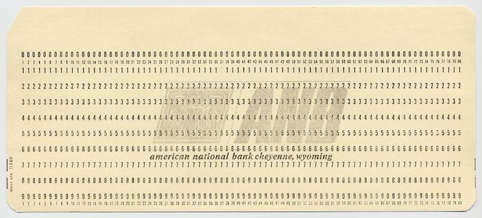
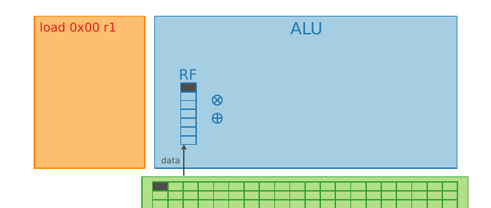
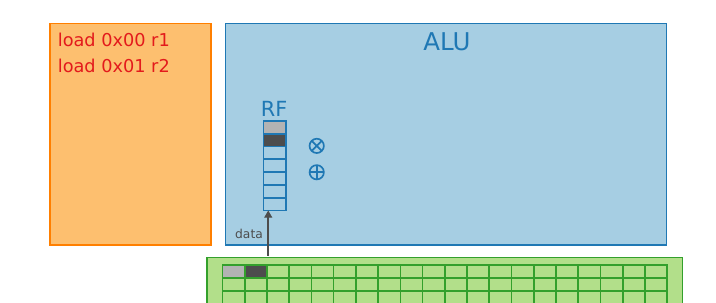
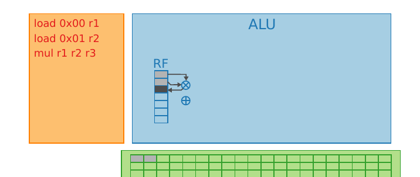
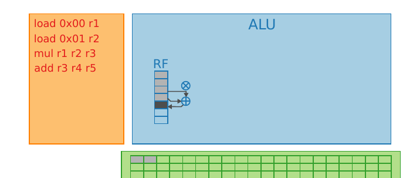
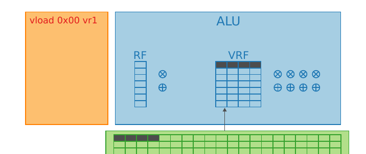
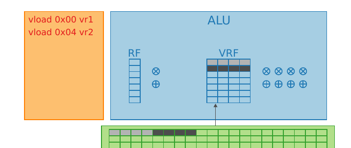
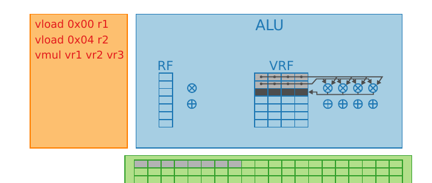
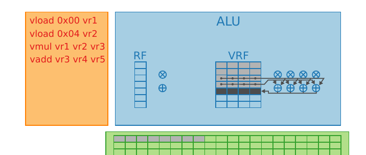

Zada, Hedron Grinder
Carte Perforée

- Comment encoder la lettre 'A'?
- Comment encoder la lettre 'a'?
>>> bin(ord('A')) '0b1000001' >>> bin(ord('a')) '0b1100001'
Application en C
$ cat to_lower.c void to_lower(char word [4]) { for(int i = 0; i < 4; ++i) { word[i] |= 0x20; } } $ clang -S -O2 -o- to_lower.c -mno-sse to_lower: orb $32, (%rdi) orb $32, 1(%rdi) orb $32, 2(%rdi) orb $32, 3(%rdi) retq
Soyons rusés !
$ cat to_lower_manual_vec.c #include <string.h> void to_lower_manual_vec(char word [4]) { unsigned as_uint; memcpy(&as_uint, word, sizeof(as_uint)); as_uint |= 0x20202020; memcpy(word, &as_uint, sizeof(as_uint)); } $ clang -S -O2 -o- to_lower_manual_vec -mno-sse to_lower_manual_vec: orl $538976288, (%rdi) # imm = 0x20202020 retq
Et pour l'addition ?
$ cat satincr.c void satincr(unsigned short word [2]) { for(int i = 0; i < 2; ++i) { if(word[i] != 0xFFFF) word[i] = word[i] + 1; } } $ clang -S -O2 -o- satincr.c -mno-sse satincr: movzwl (%rdi), %eax cmpw $-1, %ax je .LBB0_2 incl %eax movw %ax, (%rdi) .LBB0_2: movzwl 2(%rdi), %eax cmpw $-1, %ax je .LBB0_4 incl %eax movw %ax, 2(%rdi) .LBB0_4: retq
Soyons rusés !
$ cat satincr_manual_vec.c #include <string.h> void satincr(unsigned short word [2]) { unsigned as_uint; memcpy(&as_uint, word, sizeof(as_uint)); unsigned upper_bit = as_uint & 0x80008000u; unsigned add_lower = (as_uint & ~0x80008000u) + 0x00010001u; as_uint = add_lower | upper_bit; memcpy(word, &as_uint, sizeof(as_uint)); } $ clang -S -O2 -o- satincr_manual_vec -mno-sse to_lower_manual_vec: satincr_manual_vec: movl (%rdi), %eax movl %eax, %ecx andl $-2147450880, %ecx # imm = 0x80008000 andl $2147450879, %eax # imm = 0x7FFF7FFF addl $65537, %eax # imm = 0x00010001 orl %ecx, %eax movl %eax, (%rdi) retq
Data Level Parallelism
Comment fait Ducobu pour faire plus vite ses punitions ?
Il utilise le fameux « crayon multi-ligne » !
N.B. : marche aussi avec un pinceau et un mur…
Pouvons nous avoir un "pinceau" à calcul ?
Architecture SIMD

Architecture SIMD

Architecture SIMD

Architecture SIMD

Architecture SIMD

Architecture SIMD

Architecture SIMD

Architecture SIMD

La contrainte de contiguïté
Le CPU charge des lignes complètes de mémoire ("cache lines"). Il ne peut pas "picorer" les données.
Le problème : Array of Structures (AoS) C'est l'approche "Objet" classique, mais le vecteur charge un mélange :
Mémoire : [x0, y0, z0] [x1, y1, z1] [x2, y2, z2]
|______________________|
|
Registres : [ x0 | y0 | z0 | x1 ]
[ y1 | z1 | x2 | y2 ]
-> Incalculable directement !La solution : Structure of Arrays (SoA) On sépare les composantes pour qu'elles soient contiguës :
Mémoire : [x0, x1, x2, x3] [y0, y1, y2, y3]
|____________| |____________|
| |
v |
Registres : [ x0 | x1 | x2 | x3 ] |
[ y0 | y1 | y2 | y3 ] <-----+
-> Prêts pour l'addition !Illustration
X | [ x_0 | x_1 | x_2 | x_3 ] + | + + + + X | [ y_0 | y_1 | y_2 | y_3 ] = | = = = = Z | [ z_0 | z_1 | z_2 | z_3 ]
Single Instruction Multiple Data
Les processeurs classiques travaillent sur des scalaires. Les processeurs vectoriels travaillent sur des vecteurs:
Le temps d'exécution d'une opération sur un scalaire ou un vecteur est du même ordre de grandeur.
Il faut pouvoir transférer (charger ou décharger) les données depuis la mémoire vive vers les registres vectoriels.
Historique (dangerous)
le Cray-1 (né en 1975, 1m96...)

- le premier dans une puce grand public: Pentium MMX en 1996
- puis généralisé avec les jeux d'instructions SSE1-2-3-4-5 (1999, PIII), AVX (2008) sur 128 bits , AVX2 sur 256 bits (2011) et AVX-512 (32 registres sur 512 bits, apparu en 2013 sur les coprocesseurs Xeon Phi, 1 registre = 16 double ou 32 single !)
- concurrencé un temps par IBM-Motorola/Altivec (sur la gamme PowerPC)
- Sur ARM: Neon, avec différentes extensions (p.e. i8mm)
Dans votre ThinkPad / Lenovo / Asus
$ grep flags /proc/cpuinfo flags : ... mmx ... sse4_1 sse4_2 ... avx avx2 ...
Dans les centres de calcul
https://www.top500.org/, November 2025
- 1st: El Capitan, AMD based
- 2nd: Frontier, AMD based
- 3rd: Aurora, Intel based
AVX-512 partout
Comment utiliser une instruction vectorielle ?
- Écrire de l'assembleur
- Utiliser des intrinsèques
- Utiliser une bibliothèque
- Utiliser des directives
- Laisser faire le compilateur
Instructions SIMD, Vues du C
Les intrinsèques supportés par la majorités des compilateurs, par famille de jeu d'instruction
#include <immintrin.h> for(float *iter0 = ptr0, *iter1 = ptr1; iter0 < end0; iter0 += 16, iter1 += 16) { __m256 v0 = _mm256_loadu_ps(iter0); __m256 v1 = _mm256_loadu_ps(iter1); dot0 = _mm256_fmadd_ps(v0, v1, dot0); _mm256_storeu_ps(iter0, dot0); v0 = _mm256_loadu_ps(iter0 + 8); v1 = _mm256_loadu_ps(iter1 + 8); dot1 = _mm256_fmadd_ps(v0, v1, dot1); _mm256_storeu_ps(iter1, dot1); }
Instructions SIMD, Vues du C
Avantages :
- Contrôle grain fin, proche de l'assembleur (~1 intrinsèque par instruction assembleur)
- Typage fort
Inconvénients :
- Portabilité nulle
Bible Intel sur le sujet: https://www.intel.com/content/www/us/en/docs/intrinsics-guide/index.html
🎮 Jeu !
Corrigez le code suivant en utilisant les bons intrinsèques:
https://godbolt.org/z/M7xcs4xK3
#include <immintrin.h> #include <cstdint> void toy(uint16_t *ptr0, uint16_t *ptr1, uint16_t *end0) { for(uint16_t *iter0 = ptr0, *iter1 = ptr1; iter0 < end0; iter0 += 30, iter1 += 30) { __m256i v0 = _mm256_loadu_si256((__m256i*)iter0); __m256i v1 = _mm256_loadu_si256((__m256i*)iter1); __m256i adds = _mm256_add_epi16(v0, v1); _mm256_store_si256((__m256i*)iter0, adds); } }
Commentez la sortie de l'outil llvm-mca sur cet exemple
Instructions SIMD, Vues du C++
Bibliothèque de portabilité, basées sur les intrinsèques et la méta-programation
for(size_t i = 0; i < vec_size; i += 2 * simd_size) { auto v0 = xs::load_aligned(&ptr0[i]); auto v1 = xs::load_aligned(&ptr1[i]); dot0 = xs::fma(v0, v1, dot0) dot0.store_aligned(&ptr0[i]); v0 = xs::load_aligned(&ptr0[i + simd_size]); v1 = xs::load_aligned(&ptr1[i + simd_size]); dot1 = xs::fma(v0, v1, dot1) dot1.store_aligned(&ptr0[i + simd_size]); }
Instructions SIMD, Vues du C++
Avantages :
- Contrôle grain fin, proche de l'assembleur (~1 intrinsèque par instruction assembleur)
- Typage fort
- Portabilité
Inconvénients :
- Ne couvrent généralement pas toute les possibilités du langage cible (prix de la généricité)
- Contrainte de langage (e.g. C++11)
🎮 Jeu !
Comparez avec la sortie du code suivant :
https://godbolt.org/z/nWPd1nxM6
#include <xsimd/xsimd.hpp> void toy(uint16_t *ptr0, uint16_t *ptr1, uint16_t *end0) { using b16_t = xsimd::batch<uint16_t>; for(uint16_t *iter0 = ptr0, *iter1 = ptr1; iter0 < end0; iter0 += b16_t::size, iter1 += b16_t::size) { auto v0 = b16_t::load_unaligned(iter0); auto v1 = b16_t::load_unaligned(iter1); auto adds = xsimd::sadd(v0, v1); adds.store_unaligned(iter0); } }
Changez l'architecture cible et observez le résultat en terme de performance et de portabilité.
Instructions SIMD, Vues de d'OpenMP
Annotation de code pour la vectorisation automatique de boucles
interface real function func(x) !$OMP DECLARE SIMD (func) real, intent(in) :: x end function func end interface vec_sum = 0. ! !$OMP SIMD reduction(+:vec_sum) do i = 1,nx vec_sum = vec_sum + func(x(i)) enddo
Compatible C, C++ et Fortran
Instructions SIMD, Vues de d'OpenMP
Avantages :
- Explicite
- Incrémental
- Portabilité
Inconvénients :
- Pouvoir d'expression limité
Instructions SIMD, Vues du Compilateur
ICC, Gcc, clang possèdent chacun des passes de vectorisation automatique. Il est alors nécessaire de préciser l'architecture ciblée :
- -march=native pour cibler la machine courante
- -mavx2 pour cibler AVX2
cf. -ftree-vectorize (gcc) -fvectorize clang, activés à -O2 ou -O3 suivant les compilos
Instructions SIMD, Vues du Compilateur
Avantages :
- Automatique
- Incrémental
- Portable
Inconvénients :
- Debug difficile
- Optimalité
🎮 Jeu !
Comparez la sortie de gcc et clang sur le code suivant :
https://godbolt.org/z/9eGbaGabv
#include <limits> #include <cstdint> void toy(uint16_t *ptr0, uint16_t *ptr1, uint16_t *end0) { for(uint16_t *iter0 = ptr0, *iter1 = ptr1 ; iter0 < end0; iter0 += 1, iter1 += 1) { uint32_t tmp = *iter0 + *iter1; if(tmp > std::numeric_limits<uint16_t>::max()) tmp = std::numeric_limits<uint16_t>::max(); *iter0 = tmp; } }
Changez le niveau d'optimisation, l'architecture cible... et comparez la sortie de llvm-mca sur ces différents cas.
Le problème des branchements
Comment vectoriser le cas suivant ?
for(int i = 0; i < 8; ++i) { if (cond[i]) out[i] = in[i] + 1; else out[i] = in[i] - 1; }
If-conversion
Exécuter les deux branches !
for(int i = 0; i < 8; ++i) { tmp0[i] = in[i] + 1; tmp1[i] = in[i] - 1; } for(int i = 0; i < 8; ++i) out[i] = cond[i] ? tmp0[i] : tmp1[i];
If-conversion
Trouver une expression équivalente !
for(int i = 0; i < 8; ++i) { out[i] = in[i] - 1 + cond[i] * 2; }
protip: max et min effecuent des tests implicites.
If-conversion
Utiliser des instructions avec masque
for(int i = 0; i < 8; ++i) { out[i] = add_if(in[i], 1, cond[i]); out[i] = sub_if(in[i], 1, cond[i]); }
Le problème des déplacements
Comment vectoriser la séquence suivante ?
typedef struct { double d0, d1; } data_t; void cmul(data_t* lhs, data_t* rhs) { lhs->d0 = lhs->d0 + rhs->d1; lhs->d1 = lhs->d1 + rhs->d0; }
Changer le type
Quand c'est possible
typedef struct { double d0, d1; } data_t; typedef struct { double d1, d0; } swap_t; void cmul(data_t* lhs, swap_t* rhs) { lhs->d0 = lhs->d0 + rhs->d1; lhs->d1 = lhs->d1 + rhs->d0; }
Changer les données
typedef struct { double d0, d1; } data_t; void cmul(data_t* lhs, data_t* rhs) { swap(&rhs->d0, &rhs->d1); lhs->d0 = lhs->d0 + rhs->d0; lhs->d1 = lhs->d1 + rhs->d1; swap(&rhs->d0, &rhs->d1); }
Il existe souvent des opérations pour faire ça au niveau du vecteur
Le problème des réductions
Comment vectoriser la séquence suivante ?
void sum(int v[16]) { int s = 0; for (int i = 0; i < 16; ++i) s += v[i]; }
~= v0 + v1 + ... + v 15
Sommes partielles
réordonner les instructions :
void sum(int v[16]) { int p[4] = {0, 0, 0, 0}; for (int i = 0; i < 4; ++i) { for (int j = 0; j < 4; ++j) p[j] += v[4 * i + j]; int s = 0.f; for (int i = 0; i < 4; ++i) s+= p[i]; }
~= (v0 + v4 + v8 + v12) + ( ... ) + ...
Valable pour les flottants ?
Classification des opérations (1)
D'après le manuel ARM /Neon
- Bit manipluation (eg. vclzq_u8)
- Compare (eg. vcagt_f32)
- Complex arithmetic (eg. vcmlaq_rot180_f64)
- Cryptography (eg. vsha256hq_u32)
- Data Type Conversion (eg. vreinterpret_u8_s16)
- Load (eg. vld1q_dup_s32)
- Logical (eg. vornq_u16)
(...)
Classification des opérations (2)
(...)
- Move (eg. vmovl_high_s8)
- Scalar Arithmetic (eg. vmla_n_s32)
- Shift (eg. vshlq_u8)
- Store (eg. vst1q_s32)
- Table Lookup (eg. vqtbl1_u8)
- Vector Artihmetic (eg. vrecpsq_f32)
- Vector Manipulation (eg. vzip1q_u8)
🎮 Jeu !
Faites mieux que GCC sur le code suivant
https://godbolt.org/z/s8zP79K3T
#include <complex> void toy(std::complex<float> *ptr0, std::complex<float> *ptr1) { ptr0[0] *= ptr1[0] + 2.f; ptr0[1] *= ptr1[1] + 2.f; ptr0[2] *= ptr1[2] + 2.f; ptr0[3] *= ptr1[3] + 2.f; }
Astuces: -ffast-math, -O3, intrinsics, xsimd, lecture ... ?
Instructions SIMD, contraintes algorithmiques
On aime :
- Les structures régulières (pixels, tableau, matrices)
- Les algorithmes réguliers (boucles à pas fixe)
On aime moins :
- Les structures irrégulières (listes, arbres, graphes)
- Les algorithmes dynamiques (boucles à pas irréguliers, sauts conditionnels…)
🎮 Jeu !
Vectoriser le code dotprod.cpp en utilisant intrinsèques ou xsimd.
> clang -O2 dotprod.cpp -o dotprod -mavx2 -mfma > ./dotprod 10000
🎮 Jeu !
Vectoriser le code vmprod.cpp en utilisant intrinsèques ou xsimd.
> clang -O2 vmprod.cpp -o vmprod -mavx2 -mfma > ./vmprod 10000
Instructions SIMD, contraintes matérielles
Pour pleinement tirer parties des instructions SIMD, il est bon de
- Connaître (ou fixer) l'alignement de nos données
- Avoir des données contigües en mémoire
- Temps de chargement des données (prefetch)
SIMD vous fait rêver, mais réveillez-vous
Dans la vraie vie d'un code, il y a
- des successions de dépendances en série qui cassent le parallélisme,
- des opérations récursives à nombre de cycles variabeles (la division?),
- des données qui ne sont pas toujours disponibles à temps en cache L1 ou dans les registres,
- une mémoire RAM au débit limité et partagé, avec des ruptures possibles d'alignement,
- une puce qui chauffe et qui réduit sa fréquence de fonctionnement...
Aidons les outils
Mieux vaut
- écrire un code bien compréhensible par le compilateur que de finir le code à l'assembleur ou aux intrinsics (AVX-512 = environ 4000 instructions! Bon courage ;) ),
- savoir utiliser les bonnes bibiliothèques optimisées et coder des boucles "vectorisables":
- avec des profondeurs de boucles connues (pas de break, bof bof le while, attention aux tests "if" en cours de boucle),
- limitant les appels de fonctions (que du basique, passable en inline, issues de librairies "classiques"),
- avec des itérations indépendantes!!!